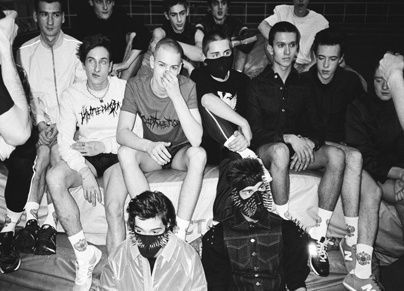
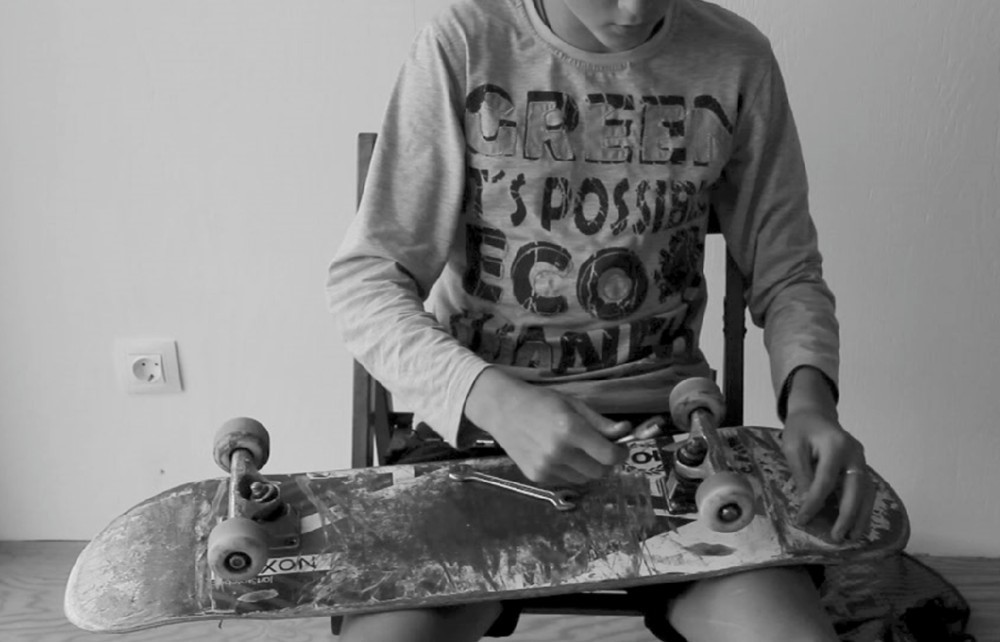
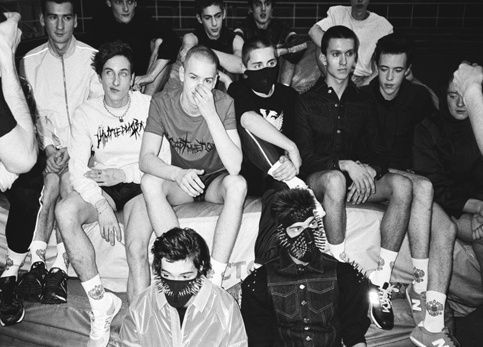
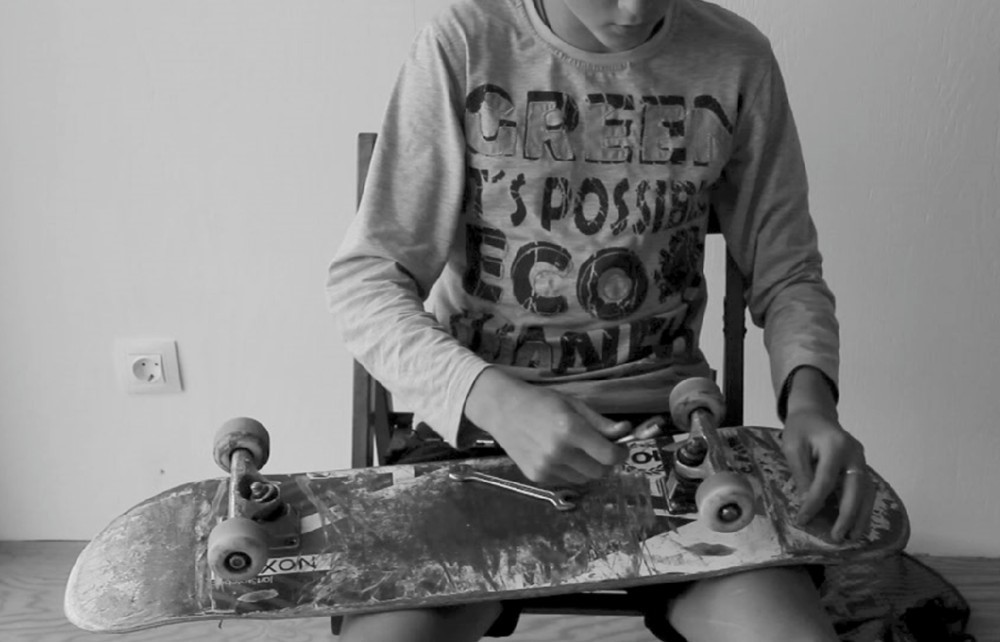
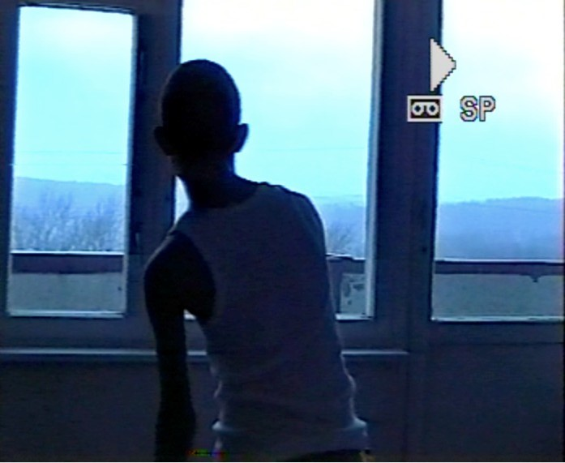
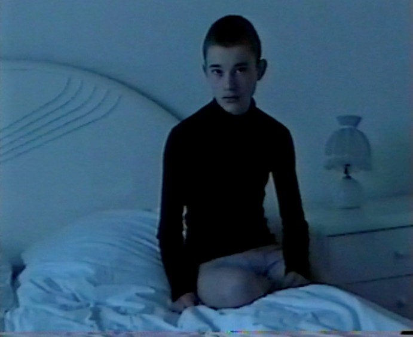
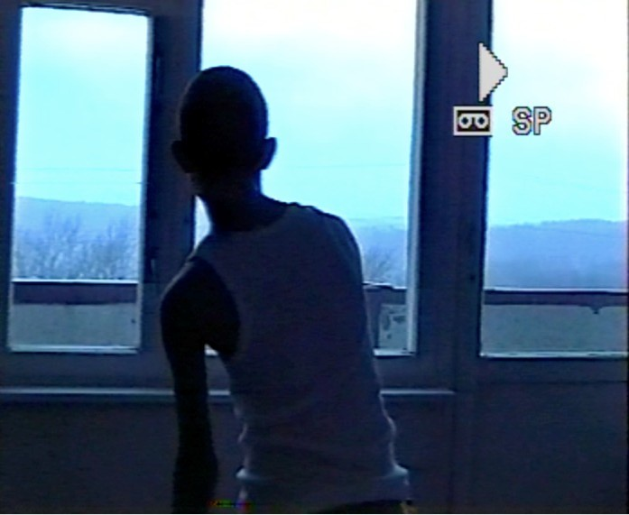
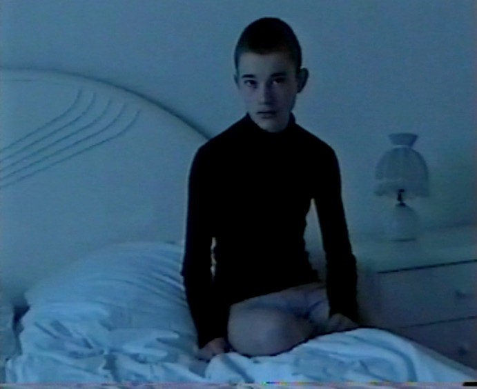

 



I personally would not refer to myself as traditional or only as a fashion designer, per se. Photography was my passion long before fashion,For me everything is related. All mediums work hand in hand to create a global Gosha project, a 360-degree view of my ideas.